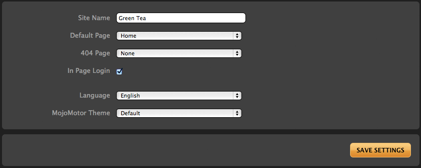

Site Settings
Various aspects of the global operations of MojoMotor are accessible from Site Settings.

Site Name
The site name is used for importing/exporting purposes, and is also accessible via {mojo:site:site_name}.
Default Page
When a visitor arrives at your site, this is the page that will load by default. It is your "home" page.
404 Page
The Page to be shown when a visitor requests a page that does not exist. If set to "None", a standard, simple error page will be displayed.
In Page Login?
MojoMotor offers the ability for your site members to login via a modal window. This login link is accessible when {mojo:site:login} is used. If you would like to disable this functionality, simply uncheck this option. MojoMotor will then not display any content for that tag.
MojoMotor Theme
The MojoMotor admin bar can be themed. Additional MojoMotor themes placed in application/views/themes/ can be selected from this dropdown.